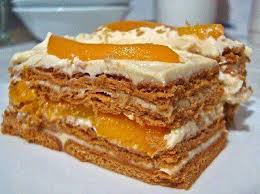

Graham Cake

Description
Graham Cake is a delicious and famous Filipino cake that's easy to make.
The Graham cake recipe doesn't require baking; it's a refrigerated cake
that uses mangoes, condensed milk, all-purpose cream, and Graham crackers
as its ingredients.
Ingredients
- 2 Ripe Mangoes
- 1 Pint / 475 mls of Whipping Cream
-
14oz / 400g of Sweetened Condensed Milk ( I used about 3/4 of this Tin)
- 1 Packet of Graham Crackers or any Oatmeal Biscuits.
Steps
- Peel, slice and dice the mango into small cubes.
-
Pour the cream into a bowl and whip until you have stiff peaks. Add the
condensed milk and stir through until mixed.
-
Place a layer of the the Graham Crackers into your dish. Spoon on some
of the cream and spread over the crackers.
- Cover the cream with a layer of the dices mangoes.
-
Repeat steps 3 to 4. Top with the last layer of crackers. Cover the
crackers with the cream and make as smooth as you can. Crush up some of
the crackers till you have fine cracker crumbs and sprinkle on top of
the cream.
-
Once the Graham Cake has chilled I like to leave it overnight) it is
ready to be served. You can either spoon it into dishes or slice it and
gently lift the slice on to a plate. Dig in and enjoy!